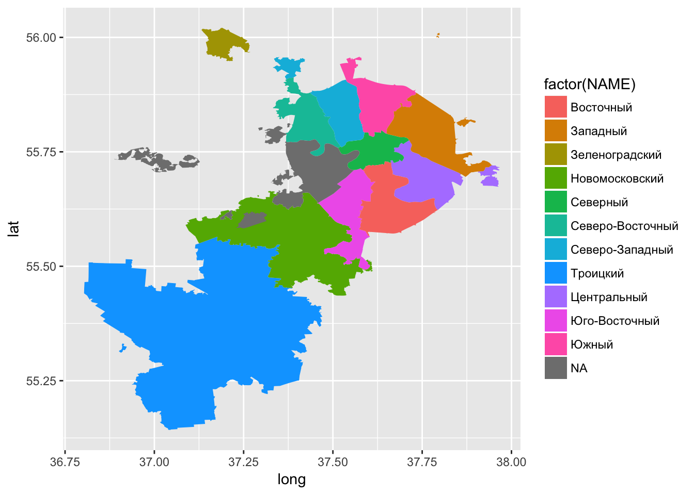
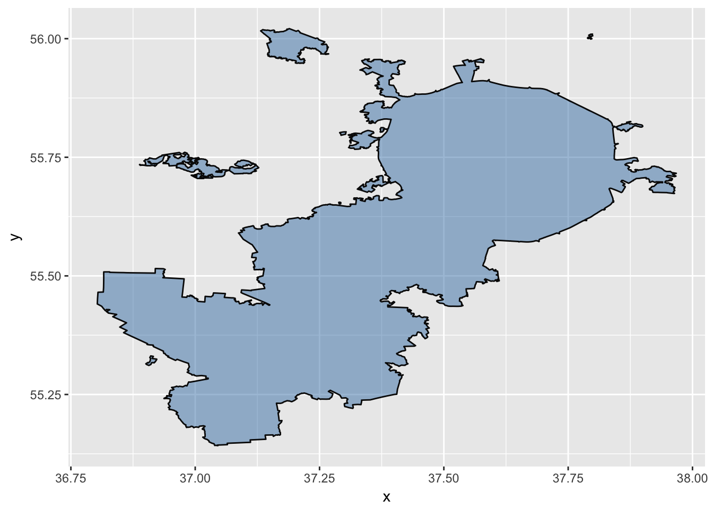

Часть 4. QGIS. OSM. ggplot
Александр Шелудков
25 07 2018
Everything is related to everything else. But near things are more related than distant things. Waldo R. Tobler
4.1. Быстрый QGIS
R обладает богатым функционалом в области анализа и визуализации геоданных. Но иногда нужно сначала взглянуть на данные в десктопной версии, быстро исправить геометрию отдельных объектов, прикинуть, как соотносятся между собой объекты разных слоев. Для этих целей лучше всего подойдет QGISМодуль QuickMapServices позволяет подгружать базовые карты OpenStreetMap, Google, Bin и др.
Даавайте загрузим стандартную карту OSM и откроем растровый файл с высотами по Москве:
Слой -> Добавить слой -> Добавить векторный слой -> browse the file
4.2. Данные OpenStreetMap
OpenStreetMap создан руками сообщества энтузиастов. Это открытая, доступная для редактирования карта, на которой собрана информация о дорогах, зданиях, административных границах, природных объектах, POI и других географических объектах. Это открытые данные, а, значит, вы можете использовать их для любых целей до тех пор, пока указываете авторские права OpenStreetMap и его участников.
Структура данных в OSM отличается от структуры данных в других ГИС, например, для создания сложной геометрии вместо полигонов в OSM принят тип “отношения” (relations). Вместо стандартной атрибутивной таблицы объектам присваиваивается набор тегов по принципу “ключ=значение”. Редакторы сами определяют набор тегов, однако наиболее типичные ситуации описаны в специальных соглашениях. Например, только для обозначения дорог используется несколько десятков тегов. Есть отдельные теги для ????. Таким образом, та информация, которую мы видим на картах, - лишь малая часть данных, созданных сообществом OSM.
Для выгрузки данных OSM удобно использовать overpass-turbo.
Для примера выгрузим данные OSM по рекам и другим водным объектам:
Open Query Wizard -> “building” -> build query -> Run
Export -> Download as GeoJSON
4.2.1 Задание 5
Скачайте любой точечный и линейный набор данных из OSM и откройте его в QGIS
4.3. Пространственные выборки
moscow <- readOGR("data/mos_ao/ao.shp")## OGR data source with driver: ESRI Shapefile
## Source: "data/mos_ao/ao.shp", layer: "ao"
## with 12 features
## It has 3 fieldsrivers <- readOGR("data/rivers.geojson")## OGR data source with driver: GeoJSON
## Source: "data/rivers.geojson", layer: "OGRGeoJSON"
## with 978 features
## It has 88 fieldsbars <- readOGR("data/bars.geojson")## OGR data source with driver: GeoJSON
## Source: "data/bars.geojson", layer: "OGRGeoJSON"
## with 524 features
## It has 65 fieldsrivers## class : SpatialLinesDataFrame
## features : 978
## extent : 36.95705, 38.50033, 55.31397, 56.04867 (xmin, xmax, ymin, ymax)
## coord. ref. : +proj=longlat +datum=WGS84 +no_defs +ellps=WGS84 +towgs84=0,0,0
## variables : 88
## names : id, X.id, layer, name, tunnel, waterway, wikidata, wikipedia, boat, motorboat, have_riverbank, name.eo, source, name.da, name.en, ...
## min values : way/10043002, way/10043002, -1, Алешинка, building_passage, river, Q1126808, ru:Алтуфьевская речка, no, no, no, Moskva, Фото, на глаз, Moskva, Gorodnja, ...
## max values : way/97942840, way/97942840, 0, Яуза, yes, river, Q4536378, ru:Яуза, yes, yes, yes, Siniĉka, yahoo, Yauzafloden, Yauza River, ...bars## class : SpatialPointsDataFrame
## features : 524
## extent : 36.94898, 38.21713, 55.42753, 56.02171 (xmin, xmax, ymin, ymax)
## coord. ref. : +proj=longlat +datum=WGS84 +no_defs +ellps=WGS84 +towgs84=0,0,0
## variables : 65
## names : id, X.id, amenity, name, addr.city, addr.country, addr.housenumber, addr.street, contact.phone, contact.website, name.en, name.ru, website, contact.facebook, opening_hours, ...
## min values : node/1005385541, node/1005385541, bar, "Каприз", Железнодорожный, RU, 1, 1-я Дубровская улица, + 7 495 6236913; + 7 495 6236459, http://bagabar.com, Мint Lounge, Амстел Боулинг, glastonberrypub.ru, coffeeandwinebar, 10:00-23:00, ...
## max values : node/971038731, node/971038731, bar, Wunderbar, Пушкино, RU, 98 к1, Яблоневая аллея, https://new.vk.com/craftberi, https://www.kotbar.ru, Zhiga Dryga, SpielBEERg, www.vk.com/zapivcom, wunderbarmoscow, We,Th 12:00-24:00; Fr,Sa 18:00-06:00, ...Предположим, мы хотим найти бары в 300 м от реки. Для этого построим буфер и выделим точки внутри этого буфера. Однако в ситуации с нашими данными есть одно большое НО. Какое?
4.3.1 Перепроецирование
The Universal Transverse Mercator (UTM) делит Землю на 60 зон по 6 градусов. Москва находится в зоне 37N
# Определим CRS
UTM <- sp::CRS("+proj=utm +zone=37 +ellps=WGS84 +datum=WGS84 +units=m +no_defs")
# Перепроецируем данные
moscow_utm <- aggregate(moscow) %>% spTransform(UTM)
rivers_utm <- spTransform(rivers, UTM)
bars_utm <- spTransform(bars, UTM)Проверим
4.3.2 Intersection
Обрежем реки по границе Москвы. Для этого используем intersect() из пакета raster
raster::intersect(rivers_utm, moscow_utm) -> rivers_utmСтроим буфер вокруг рек
library(rgeos)
gBuffer(rivers_utm, width = 300) -> river_bufferВыделим бары внутри буфера
bars_utm %>% raster::intersect(river_buffer) -> my_bars
plot(my_bars)
plot(river_buffer, add = T)
4.4. ggplot() - великий и ужасный
4.4.1 Полигоны
Подготовка данных
Так как ggplot привык работать с data.frame, первое, что мы должны сделать - преобразовать Spatial* object в df так, чтобы у нас появились колонки long и lat. Делается это с помощью встроенной в ggplot2 функции fortify()
fortify(moscow) %>% dplyr::mutate(id = as.numeric(id)) -> moscow_fort
str(moscow_fort)## 'data.frame': 19867 obs. of 7 variables:
## $ long : num 36.8 36.8 36.8 36.8 36.8 ...
## $ lat : num 55.4 55.4 55.5 55.5 55.5 ...
## $ order: int 1 2 3 4 5 6 7 8 9 10 ...
## $ hole : logi FALSE FALSE FALSE FALSE FALSE FALSE ...
## $ piece: Factor w/ 7 levels "1","2","3","4",..: 1 1 1 1 1 1 1 1 1 1 ...
## $ id : num 0 0 0 0 0 0 0 0 0 0 ...
## $ group: Factor w/ 27 levels "0.1","0.2","1.1",..: 1 1 1 1 1 1 1 1 1 1 ...Единственная проблема: во время преобразования fortify() отбрасывает атрибутивные данные. Придется их снова приклеить
moscow@data %>%
mutate(id = 0:(nrow(moscow@data)-1)) %>%
right_join(moscow_fort, by = c("id" = "id")) -> moscow_fortА теперь
ggplot()+
geom_polygon(data = moscow_fort,
aes(x = long, y = lat, group = group,
fill = factor(NAME)))
Посмотреть/почитать: https://timogrossenbacher.ch/2016/12/beautiful-thematic-maps-with-ggplot2-only/
4.4.2 Точки
С точками немного проще: сохраним координаты в отдельные столбцы
bars@data %>%
mutate(x = coordinates(bars)[,1],
y = coordinates(bars)[,2]) -> bars@dataВизуализируем
ggplot()+
geom_polygon(data = aggregate(moscow),
aes(x = long, y = lat, group = group), alpha = 0.5, col = "grey3", fill = "steelblue" )+
geom_point(data = bars@data, aes(x = x, y = y, col = factor(craft_beer)),
size = 1.3, alpha = 0.5)
4.4.3 Density
ggplot(bars@data, aes(x = x, y = y))+
geom_polygon(data = aggregate(moscow),
aes(x = long, y = lat, group = group), alpha = 0.5, col = "grey3", fill = "steelblue" )